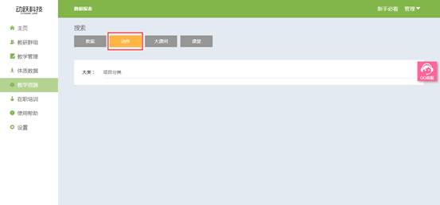

动作视频
视频教程：
1. 登录动跃体育教学管理平台后，进入平台操作界面。
2. 点击进入教学资源 > 点击动作按钮，如下图:

3. 根据教师的所需查找的教学动作内容，依次选择大类> 中间类。
>大类：将所有的运动动作分类,分为素质、运动、项目、水平四大类。
>中间类：在大类的内容下，将动作根据器械和徒手两类。

4. 点击播放按钮或点击蓝色文本 , 播放视频 , 如下图:
5. 点击后，进入播放页面，可以看到动作视频及详细信息。
>视频页面左下角显示视频时长，右下角可以播放暂停。
>标签：显示运动分类
>动作：对动作视频的文字描述，文字配合视频，更易理解视频内容。
>要领：该动作的需要特别注意，能够迅速掌握到动作的文字描述。